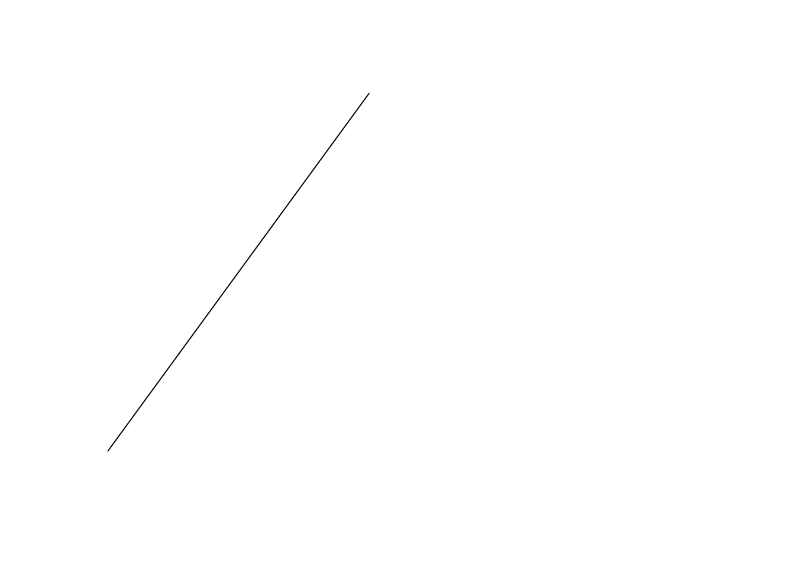
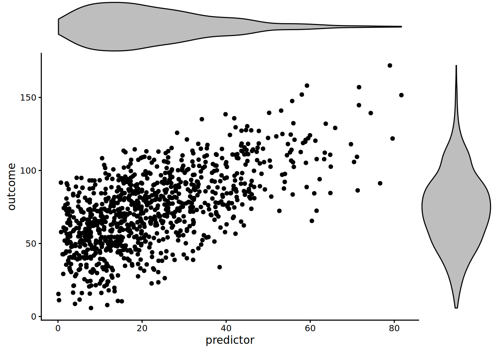
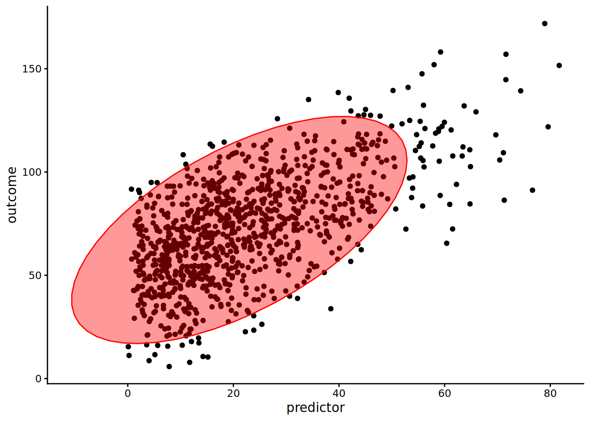
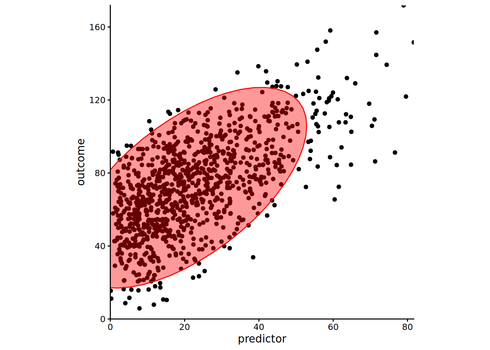
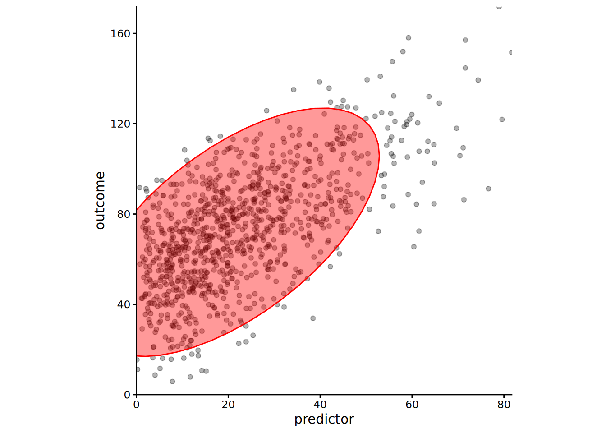

Figures in R
1 Picking a Chart Type
2 Gallery
3 Resources for Learning R Syntax for Figures
4 Petersen Lab Examples
https://research-git.uiowa.edu/PetersenLab/R-Plotting/-/tree/main/Analyses
5 Font
You can download the lab fonts for figures here1: https://drive.google.com/drive/u/0/folders/1fqlrnEe7NFnWZoIrsHmr8ulDS4nhs-H3
5.1 Preamble
5.1.1 Install Libraries
#install.packages("remotes")
#remotes::install_git("https://research-git.uiowa.edu/PetersenLab/petersenlab.git")5.1.2 Load Libraries
library("petersenlab")
library("ellipse")
library("ggplot2")
library("grid")
library("reshape")
library("plyr")
library("RColorBrewer")
library("reshape2")
library("ggExtra")
library("viridis")
library("ggthemes")5.2 Simulate Data
set.seed(52242)
n <- 1000
predictor <- rbeta(n, 1.5, 5) * 100
outcome <- predictor + rnorm(n, mean = 0, sd = 20) + 50
number <- sample(1:1000, replace = TRUE)
predictorOverplot <- sample(1:50, n, replace = TRUE)
outcomeOverplot <- predictorOverplot + sample(1:75, n, replace = TRUE)
df <- data.frame(predictor = predictor,
outcome = outcome,
predictorOverplot = predictorOverplot,
outcomeOverplot = outcomeOverplot)
df[sample(1:n, size = 10), "predictor"] <- NA
df[sample(1:n, size = 10), "outcome"] <- NA
df[sample(1:n, size = 10), "predictorOverplot"] <- NA
df[sample(1:n, size = 10), "outcomeOverplot"] <- NA5.3 Basic Scatterplot
5.3.1 Base R
plot(outcome ~ predictor, data = df)
plot(df$predictor, df$outcome)5.3.1.1 Best-fit line
plot(outcome ~ predictor, data = df)
abline(lm(outcome ~ predictor, data = df), col = "red") #regression line (y~x)
5.3.1.2 Loess line
plot(outcome ~ predictor, data = df)
lines(loess.smooth(df$predictor, df$outcome)) #loess line (x,y)5.3.2
ggplot2
ggplot(df, aes(x = predictor, y = outcome)) +
geom_point() +
theme_classic()
5.3.2.1 Best-fit line
ggplot(df, aes(x = predictor, y = outcome)) +
geom_point() +
stat_smooth(method = "lm", formula = y ~ x) +
theme_classic()5.3.2.2 Loess line
ggplot(df, aes(x = predictor, y = outcome)) +
geom_point() +
stat_smooth(method = "loess", formula = y ~ x) +
theme_classic()5.4 Change Plot Style
5.4.1 Change Theme
basePlot <- ggplot(df, aes(x = predictor, y = outcome)) +
geom_point()5.4.1.1 Default Theme
basePlot
5.4.1.2 Grayscale:
theme_gray()
basePlot + theme_gray() + theme(text = element_text(family = "Gotham"))
5.4.1.3 Black-and-White:
theme_bw()
basePlot + theme_bw() + theme(text = element_text(family = "Gotham"))5.4.1.4 Line Drawing:
theme_linedraw()
A theme with only black lines of various widths on white backgrounds, reminiscent of a line drawing. Note that this theme has some very thin lines (<< 1 pt) which some journals may refuse.
basePlot + theme_linedraw() + theme(text = element_text(family = "Gotham"))
5.4.1.5 Light:
theme_light()
basePlot + theme_light() + theme(text = element_text(family = "Gotham"))
5.4.1.6 Dark:
theme_dark()
basePlot + theme_dark() + theme(text = element_text(family = "Gotham"))5.4.1.7 Minimal:
theme_minimal()
basePlot + theme_minimal() + theme(text = element_text(family = "Gotham"))5.4.1.8 Classic:
theme_classic()
basePlot + theme_classic() + theme(text = element_text(family = "Gotham"))
5.4.1.9 A Completely
Empty Theme: theme_void()
basePlot + theme_void() + theme(text = element_text(family = "Gotham"))
5.4.1.10 Visual Unit
Tests: theme_test()
basePlot + theme_test() + theme(text = element_text(family = "Gotham"))
5.4.1.11 Edward Tufte:
theme_tufte()
Theme based on Edward Tufte.
basePlot + theme_tufte()5.4.1.12 Wall Street
Journal: theme_wsj()
Theme based on the publication, the Wall Street Journal.
basePlot + theme_wsj()
5.4.1.13 FiveThirtyEight:
theme_fivethirtyeight()
Theme based on the publication, FiveThirtyEight.
basePlot + theme_fivethirtyeight()
5.4.1.14 The Economist:
theme_economist()
Theme based on the publication, The Economist.
basePlot + theme_economist()
5.4.1.15 Stephen Few:
theme_few()
Theme based on the rules and examples from Stephen Few’s Show Me the Numbers and “Practical Rules for Using Color in Charts”.
basePlot + theme_few()5.5 Add Marginal Distributions
scatterplot <- ggplot(df, aes(x = predictor, y = outcome)) +
geom_point() +
theme_classic() +
theme(text = element_text(family = "Gotham"))5.5.1 Density Plot
densityMarginal <- ggMarginal(scatterplot, type = "density", xparams = list(fill = "gray"), yparams = list(fill = "gray"))print(densityMarginal, newpage = TRUE)5.5.2 Histogram
histogramMarginal <- ggMarginal(scatterplot, type = "histogram", xparams = list(fill = "gray"), yparams = list(fill = "gray"))print(histogramMarginal, newpage = TRUE)
5.5.3 Boxplot
boxplotMarginal <- ggMarginal(scatterplot, type = "boxplot", xparams = list(fill = "gray"), yparams = list(fill = "gray"))print(boxplotMarginal, newpage = TRUE)
5.5.4 Violin Plot
violinMarginal <- ggMarginal(scatterplot, type = "violin", xparams = list(fill = "gray"), yparams = list(fill = "gray"))print(violinMarginal, newpage = TRUE)5.5.5 Density Plot and Histogram
densigramMarginal <- ggMarginal(scatterplot, type = "densigram", xparams = list(fill = "gray"), yparams = list(fill = "gray"))print(densigramMarginal, newpage = TRUE)5.6 Ellipse
5.6.1 Basic Ellipse
ggplot(df, aes(x = predictor, y = outcome)) +
geom_point() +
stat_ellipse(alpha = 0.4, level = 0.95, geom = "polygon", fill = "red", color = "red") +
theme_classic() +
theme(text = element_text(family = "Gotham"))
5.6.2 Align Coordinates
ggplot(df, aes(x = predictor, y = outcome)) +
geom_point() +
stat_ellipse(alpha = 0.4, level = 0.95, geom = "polygon", fill = "red", color = "red") +
scale_x_continuous(expand = c(0, 0)) +
scale_y_continuous(expand = c(0, 0)) +
coord_fixed(ratio = (max(predictor, na.rm = TRUE) - min(predictor, na.rm = TRUE))/(max(outcome, na.rm = TRUE) - min(outcome, na.rm = TRUE)),
xlim = c(0, max(predictor, na.rm = TRUE)),
ylim = c(0, max(outcome, na.rm = TRUE))) +
theme_classic() +
theme(text = element_text(family = "Gotham"))
5.6.3 Reduce Dot Size
ggplot(df, aes(x = predictor, y = outcome)) +
geom_point(size = 0.5) +
stat_ellipse(alpha = 0.4, level = 0.95, geom = "polygon", fill = "red", color = "red") +
scale_x_continuous(expand = c(0, 0)) +
scale_y_continuous(expand = c(0, 0)) +
coord_fixed(ratio = (max(predictor, na.rm = TRUE) - min(predictor, na.rm = TRUE))/(max(outcome, na.rm = TRUE) - min(outcome, na.rm = TRUE)),
xlim = c(0, max(predictor, na.rm = TRUE)),
ylim = c(0, max(outcome, na.rm = TRUE))) +
theme_classic() +
theme(text = element_text(family = "Gotham"))
5.6.4 Transparency
ggplot(df, aes(x = predictor, y = outcome)) +
geom_point(alpha = 0.3) +
stat_ellipse(alpha = 0.4, level = 0.95, geom = "polygon", fill = "red", color = "red") +
scale_x_continuous(expand = c(0, 0)) +
scale_y_continuous(expand = c(0, 0)) +
coord_fixed(ratio = (max(predictor, na.rm = TRUE) - min(predictor, na.rm = TRUE))/(max(outcome, na.rm = TRUE) - min(outcome, na.rm = TRUE)),
xlim = c(0, max(predictor, na.rm = TRUE)),
ylim = c(0, max(outcome, na.rm = TRUE))) +
theme_classic() +
theme(text = element_text(family = "Gotham"))
5.7 Bubble Chart
5.7.1 Basic Bubble Chart
ggplot(df, aes(x = predictorOverplot, y = outcomeOverplot)) +
geom_count(aes(size = ..n..)) +
scale_size_area() +
theme_classic() +
theme(text = element_text(family = "Gotham"))
5.7.2 Specify Sizes
ggplot(df, aes(x = predictorOverplot, y = outcomeOverplot)) +
geom_count(aes(size = ..n..)) +
scale_size_continuous(breaks = c(1, 2, 3, 4), range = c(1, 7)) +
theme_classic() +
theme(text = element_text(family = "Gotham"))
5.8 2-Dimensional Density
ggplot(df, aes(x = predictor, y = outcome)) +
stat_density_2d(aes(fill = ..density..), geom = "raster", contour = FALSE) +
scale_x_continuous(expand = c(0, 0)) +
scale_y_continuous(expand = c(0, 0)) +
scale_fill_viridis() +
theme(
legend.position = "none",
text = element_text(family = "Gotham")
)
5.9 Combined Ellipse and Bubble Chart
5.9.1
ggplot2
ggplot(df, aes(x = predictorOverplot, y = outcomeOverplot)) +
geom_count(alpha = .6, color = rgb(0,0,.7,.5)) +
scale_size_continuous(breaks = c(1, 2, 3, 4), range = c(1, 7)) +
stat_smooth(method = "loess", se = TRUE, color = "green") +
stat_smooth(method = "lm") +
stat_ellipse(alpha = 0.4, level = 0.95, geom = "polygon", fill = "red", color = "red") +
scale_x_continuous(expand = c(0, 0)) +
scale_y_continuous(expand = c(0, 0)) +
coord_fixed(ratio = (max(predictorOverplot, na.rm = TRUE) - min(predictorOverplot, na.rm = TRUE))/(max(outcomeOverplot, na.rm = TRUE) - min(outcomeOverplot, na.rm = TRUE)),
xlim = c(0, max(predictorOverplot, na.rm = TRUE)),
ylim = c(0, max(outcomeOverplot, na.rm = TRUE))) +
theme_classic() +
theme(text = element_text(family = "Gotham"))`geom_smooth()` using formula = 'y ~ x'
`geom_smooth()` using formula = 'y ~ x'
ggplot(df, aes(x = predictorOverplot, y = outcomeOverplot)) +
geom_count(alpha = .6, color = rgb(0,0,.7,.5)) +
scale_size_continuous(breaks = c(1, 2, 3, 4), range = c(1, 7)) +
stat_smooth(method = "loess", se = TRUE, color = "green") +
stat_smooth(method = "lm") +
stat_ellipse(color = "red", size = 1.5) +
scale_x_continuous(expand = c(0, 0)) +
scale_y_continuous(expand = c(0, 0)) +
coord_fixed(ratio = (max(predictorOverplot, na.rm = TRUE) - min(predictorOverplot, na.rm = TRUE))/(max(outcomeOverplot, na.rm = TRUE) - min(outcomeOverplot, na.rm = TRUE)),
xlim = c(0, max(predictorOverplot, na.rm = TRUE)),
ylim = c(0, max(outcomeOverplot, na.rm = TRUE))) +
theme_classic() +
theme(text = element_text(family = "Gotham"))`geom_smooth()` using formula = 'y ~ x'
`geom_smooth()` using formula = 'y ~ x'
5.9.2 Other implementation
From: https://stats.stackexchange.com/questions/7899/complex-regression-plot-in-r
5.9.2.1
ggplot2
df$x <- df$predictorOverplot
df$y <- df$outcomeOverplot
xc <- with(df, xyTable(x, y))
df2 <- cbind.data.frame(x = xc$x, y = xc$y, number = xc$number)
df2$n <- cut(df2$number, c(0,1.5,2.5,Inf), labels = c(1,2,4))
df.ell <- as.data.frame(with(df, ellipse(cor(df$x, df$y, use = "pairwise.complete.obs"),
scale = c(sd(df$x, na.rm = TRUE), sd(df$y, na.rm = TRUE)),
centre = c(mean(df$x, na.rm = TRUE), mean(df$y, na.rm = TRUE)),
level = .95)))
ggplot(data = na.omit(df2), aes(x = x, y = y)) +
geom_point(aes(size = n), alpha = .6, color = rgb(0,0,.7,.5)) +
stat_smooth(data = df, method = "loess", se = FALSE, color = "green") +
stat_smooth(data = df, method = "lm", col = "red") +
geom_path(data = df.ell, colour = "green", size = 1) +
coord_cartesian(xlim = c(-1,60), ylim = c(-1,130))`geom_smooth()` using formula = 'y ~ x'
`geom_smooth()` using formula = 'y ~ x'
5.9.2.2 Base
R
do.it <- function(df, type="confidence", ...) {
require(ellipse)
lm0 <- lm(y ~ x, data=df)
xc <- with(df, xyTable(x, y))
df.new <- data.frame(x = seq(min(df$x), max(df$x), 0.1))
pred.ulb <- predict(lm0, df.new, interval = type)
pred.lo <- predict(loess(y ~ x, data = df), df.new)
plot(xc$x, xc$y, cex = xc$number*1/4, xlab = "x", ylab = "y", ...) #change number*X to change dot size
abline(lm0, col = "red")
lines(df.new$x, pred.lo, col="green", lwd = 2)
lines(df.new$x, pred.ulb[,"lwr"], lty = 2, col = "red")
lines(df.new$x, pred.ulb[,"upr"], lty = 2, col = "red")
lines(ellipse(cor(df$x, df$y), scale=c(sd(df$x),sd(df$y)),
centre = c(mean(df$x), mean(df$y)), level = .95), lwd = 2, col = "green")
invisible(lm0)
}
df3 <- na.omit(df[sample(nrow(df), nrow(df), rep = TRUE),])
df3$x <- df3$predictorOverplot
df3$y <- df3$outcomeOverplot
do.it(df3, pch = 19, col = rgb(0,0,.7,.5))
5.10 Visually-Weighted Regression
5.10.1 Default
vwReg(outcome ~ predictor, data = df)5.10.2 Shade
vwReg(outcome ~ predictor, data = df, shade = TRUE, spag = FALSE, show.lm = TRUE, show.CI = TRUE, bw = FALSE, B = 1000, quantize = "continuous")vwReg(outcome ~ predictor, data = df, shade = TRUE, spag = FALSE, show.lm = TRUE, show.CI = TRUE, bw = FALSE, B = 1000, quantize = "SD")
5.10.3 Spaghetti
vwReg(outcome ~ predictor, data = df, shade = FALSE, spag = TRUE, show.lm = TRUE, show.CI = TRUE, bw = FALSE, B = 1000)vwReg(outcome ~ predictor, data = df, shade = FALSE, spag = TRUE, show.lm = FALSE, show.CI = FALSE, bw = FALSE, B = 1000)5.10.4 Black/white
vwReg(outcome ~ predictor, data = df, shade = TRUE, spag = FALSE, show.lm = TRUE, show.CI = TRUE, bw = TRUE, B = 1000, quantize = "continuous")
vwReg(outcome ~ predictor, data = df, shade = TRUE, spag = FALSE, show.lm = TRUE, show.CI = TRUE, bw = TRUE, B = 1000, quantize = "SD")
vwReg(outcome ~ predictor, data = df, shade = FALSE, spag = TRUE, show.lm = TRUE, show.CI = TRUE, bw = TRUE, B = 1000, quantize = "SD")6 Graphic Design Principles for Data Visualization
7 Types of Plots
7.1 Univariate Distribution
Used for: distribution of one numeric variable
7.1.1 Gallery
- Violin chart: https://r-graph-gallery.com/violin.html
- Density chart: https://r-graph-gallery.com/density-plot.html
- Histogram: https://r-graph-gallery.com/histogram.html
- Boxplot: https://r-graph-gallery.com/boxplot.html
- Ridgeline chart: https://r-graph-gallery.com/ridgeline-plot.html
7.2 Bivariate Scatterplots
Used for: association between two numeric variables
7.2.1 Base
R
plot(x, y)7.2.2 ggplot2 package
http://www.cookbook-r.com/Graphs/Scatterplots_(ggplot2)/
ggplot(data, aes(x, y)) +
geom_point()7.2.3 Gallery
- Scatterplot: https://r-graph-gallery.com/scatterplot.html
- Bubble plot: https://r-graph-gallery.com/bubble-chart.html
- 2D density chart: https://r-graph-gallery.com/2d-density-chart.html
- Heatmap: https://r-graph-gallery.com/heatmap.html
7.2.4 Add lines
- Line chart: https://r-graph-gallery.com/line-plot.html
- Connected scatterplot: https://r-graph-gallery.com/connected-scatterplot.html
- Visually-weighted regression: http://www.nicebread.de/visually-weighted-watercolor-plots-new-variants-please-vote
- Use the
vwReg()function from thepetersenlabpackage: https://research-git.uiowa.edu/PetersenLab/petersenlab/-/blob/master/R/vwReg.R
7.2.5 Area
- Area chart: https://r-graph-gallery.com/area-chart.html
- Stacked area chart: https://r-graph-gallery.com/stacked-area-graph.html
- Streamgraph: https://r-graph-gallery.com/streamgraph.html
7.3 Bivariate Barplots
Used for: association between one categorical variable and one numeric variable (or for depicting the frequency of categories of a categorical variable)
7.3.1 Gallery
- Barplot: https://r-graph-gallery.com/barplot.html
- Lollipop plot: https://r-graph-gallery.com/lollipop-plot.html
7.4 Multivariate Correlation Matrices
Used for: association between multiple numeric variables
For correlation matrices, I do the following:
- I use the lab’s
cor.table()function (withtype = "manuscript") from thepetersenlabpackage to create a correlation matrix. - I save the correlation matrix to a
.csvfile. - I open the .csv file in Excel and create the table in Excel that can be copied and pasted to Word/Powerpoint/etc.
7.4.1 Correlograms
corrplotpackage: https://cran.r-project.org/web/packages/corrplot/vignettes/corrplot-intro.htmlcorrgrampackage: https://cran.r-project.org/web/packages/corrgram/vignettes/corrgram_examples.html
7.4.1.1 Gallery
7.4.2 Pairs panels
psych package: https://personality-project.org/r/psych/help/pairs.panels.html
I depict examples of correlograms and pairs panels here: https://isaactpetersen.github.io/Principles-Psychological-Assessment/factor-analysis-PCA.html#correlations
7.5 Path Diagrams
Used for: SEM/CFA/path analysis
If you are just trying to visualize the results of a SEM model fitted
using the lavaan package, I recommend the semPlot package
(http://sachaepskamp.com/semPlot/examples) in
R. You can see examples of my implementation here: https://isaactpetersen.github.io/Principles-Psychological-Assessment/sem.html#path-diagram-1
If you are trying to create a figure for a paper or poster, you might want something that you can draw and customize yourself. I use Adobe Illustrator for hand-drawn figures.
You can look at various options below:
semPlotpackageAdobe IllustratorOnyx: https://onyx-sem.comyworks: https://www.yworks.comMicrosoft Visio: https://www.microsoft.com/en-us/microsoft-365/visio/flowchart-softwareMicrosoft PowerpointAMOSWarpplsGraphviz: https://graphviz.org- has an R port—this is what we use for our study flowchart via the
DiagrammeRpackage: https://rich-iannone.github.io/DiagrammeR/index.html
- has an R port—this is what we use for our study flowchart via the
- https://app.diagrams.net
- https://github.com/jgraph/drawio-desktop/releases
7.6 Interactive
Gallery: https://r-graph-gallery.com/interactive-charts.html
7.7 Animation
7.8 3D
Gallery: https://r-graph-gallery.com/3d.html
8 Session Info
sessionInfo()R version 4.2.2 (2022-10-31)
Platform: x86_64-pc-linux-gnu (64-bit)
Running under: Ubuntu 20.04.5 LTS
Matrix products: default
BLAS: /usr/lib/x86_64-linux-gnu/blas/libblas.so.3.9.0
LAPACK: /usr/lib/x86_64-linux-gnu/lapack/liblapack.so.3.9.0
locale:
[1] LC_CTYPE=C.UTF-8 LC_NUMERIC=C LC_TIME=C.UTF-8
[4] LC_COLLATE=C.UTF-8 LC_MONETARY=C.UTF-8 LC_MESSAGES=C.UTF-8
[7] LC_PAPER=C.UTF-8 LC_NAME=C LC_ADDRESS=C
[10] LC_TELEPHONE=C LC_MEASUREMENT=C.UTF-8 LC_IDENTIFICATION=C
attached base packages:
[1] grid stats graphics grDevices utils datasets methods
[8] base
other attached packages:
[1] ggthemes_4.2.4 viridis_0.6.2 viridisLite_0.4.1
[4] ggExtra_0.10.0 reshape2_1.4.4 RColorBrewer_1.1-3
[7] plyr_1.8.8 reshape_0.8.9 ggplot2_3.4.0
[10] ellipse_0.4.3 petersenlab_0.1.2-9010
loaded via a namespace (and not attached):
[1] nlme_3.1-160 tools_4.2.2 backports_1.4.1
[4] bslib_0.4.1 utf8_1.2.2 R6_2.5.1
[7] rpart_4.1.19 mgcv_1.8-41 Hmisc_4.7-2
[10] DBI_1.1.3 colorspace_2.0-3 nnet_7.3-18
[13] withr_2.5.0 tidyselect_1.2.0 gridExtra_2.3
[16] mnormt_2.1.1 compiler_4.2.2 cli_3.4.1
[19] htmlTable_2.4.1 mix_1.0-11 labeling_0.4.2
[22] sass_0.4.3 scales_1.2.1 checkmate_2.1.0
[25] mvtnorm_1.1-3 psych_2.2.9 stringr_1.4.1
[28] digest_0.6.30 pbivnorm_0.6.0 foreign_0.8-83
[31] rmarkdown_2.18 base64enc_0.1-3 jpeg_0.1-9
[34] pkgconfig_2.0.3 htmltools_0.5.3 fastmap_1.1.0
[37] highr_0.9 htmlwidgets_1.5.4 rlang_1.0.6
[40] rstudioapi_0.14 shiny_1.7.3 farver_2.1.1
[43] jquerylib_0.1.4 generics_0.1.3 jsonlite_1.8.3
[46] dplyr_1.0.10 magrittr_2.0.3 Formula_1.2-4
[49] interp_1.1-3 Matrix_1.5-1 Rcpp_1.0.9
[52] munsell_0.5.0 fansi_1.0.3 lifecycle_1.0.3
[55] stringi_1.7.8 yaml_2.3.6 MASS_7.3-58.1
[58] lavaan_0.6-12 parallel_4.2.2 promises_1.2.0.1
[61] miniUI_0.1.1.1 deldir_1.0-6 lattice_0.20-45
[64] splines_4.2.2 knitr_1.41 pillar_1.8.1
[67] stats4_4.2.2 glue_1.6.2 evaluate_0.18
[70] mitools_2.4 latticeExtra_0.6-30 data.table_1.14.6
[73] png_0.1-7 vctrs_0.5.1 httpuv_1.6.6
[76] gtable_0.3.1 purrr_0.3.5 assertthat_0.2.1
[79] cachem_1.0.6 xfun_0.35 mime_0.12
[82] xtable_1.8-4 later_1.3.0 survival_3.4-0
[85] tibble_3.1.8 cluster_2.1.4 ellipsis_0.3.2 Ask me to give you access.↩︎